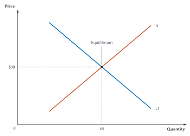
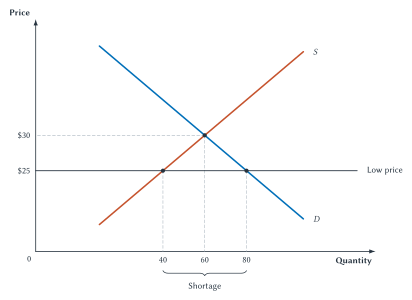
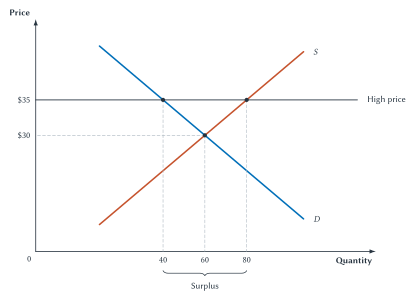
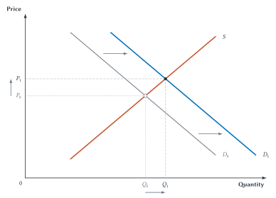
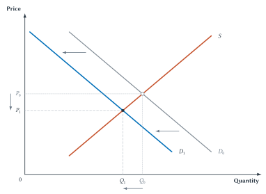
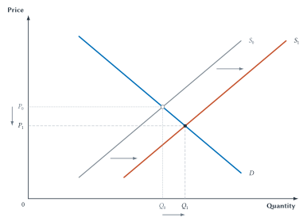
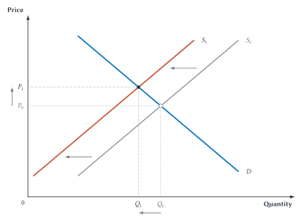

Chapter 4
Market Equilibrium and Market Adjustment
Market prices help coordinate buyers and sellers, while shortages and surpluses create pressure for plans to adjust.

A major snowstorm is forecast. Within hours, shoppers head to hardware stores looking for snow shovels. The stores did not suddenly lose their shovels, and the price may not have changed yet. What changed first was buyers’ plans.
At yesterday’s price, stores may now have many more willing buyers than available shovels. Shelves empty. Customers call other stores, wait for deliveries, offer to pay more, or settle for substitutes. Sellers notice the rush and reconsider prices, inventory, and future orders.
No single person directs all these choices. Yet they are connected. The price of a shovel affects how strongly buyers search, how many shovels sellers bring forward, and whether producers find extra output worthwhile.
Chapter 3 studied demand and supply separately. This chapter puts them together. The intersection of the two curves is important, but the main lesson is larger: prices help separate buyer and seller plans adjust toward one another.
The Competitive-Market Setting
The basic supply-and-demand model works best for a competitive market. Such a market has many buyers and sellers, no single participant controls the market price, the goods are reasonably comparable, and people can respond when prices change.
Competition does not require every real market to be perfect. The model is a useful starting point when individual buyers and sellers must take account of the market price instead of simply choosing it. Later chapters study monopoly, product differences, government rules, and other settings where the basic model needs to be changed or expanded.
| Characteristic | Why It Matters |
|---|---|
| Many buyers | No single buyer controls the market price. |
| Many sellers | No single seller controls the market price. |
| Comparable goods | Buyers can compare offers, and sellers compete for buyers. |
| Ability to respond | Buyers and sellers can change their plans when price changes. |
| Secure enough ownership and promises | People can trade because ownership and agreements are reasonably dependable. |
Table 4.1. When the competitive-market model fits best. The model is most useful when many participants can respond to prices and no one participant directs the market.
Quick Concept
Competitive Market
A competitive market has many buyers and sellers, no single participant controls the price, and participants can respond to price signals.
The market for one patented medicine does not fit this model as well as the market for wheat sold by many farms. A negotiation over one used house may also depend on bargaining between two parties. Choosing the model requires judgment about the market being studied.
For now, assume a competitive market where prices can adjust. We begin with a situation in which buyers’ and sellers’ plans fit together.
Equilibrium: Where Plans Fit Together
At every possible price, the demand curve shows quantity demanded and the supply curve shows quantity supplied. Most prices produce different buyer and seller plans. One price makes them match.
Market equilibrium occurs when quantity demanded equals quantity supplied. The equilibrium price, written \(P^*\), is the price at which the plans match. The equilibrium quantity, written \(Q^*\), is the amount buyers plan to buy and sellers plan to sell at that price.
Finding the intersection may seem almost too easy: two lines cross, so X marks the spot. But what makes that point economically special? It is the only price at which quantity demanded equals quantity supplied. At every other price, buyers’ and sellers’ plans conflict. Because the equilibrium price makes those plans fit together, it is also called the market-clearing price.
The snow-shovel schedule gives us a numerical example before we turn to the graph.
| Price Per Shovel | Quantity Demanded Per Day | Quantity Supplied Per Day |
|---|---|---|
| $20 | 100 | 20 |
| $25 | 80 | 40 |
| $30 | 60 | 60 |
| $35 | 40 | 80 |
| $40 | 20 | 100 |
Table 4.2. The daily market for snow shovels. At $30, buyers plan to purchase 60 shovels and sellers plan to provide 60. This is the only price in the schedule where the two quantities are equal.
The numerical equilibrium price is therefore $30, and the equilibrium quantity is 60 shovels per day. In symbols, \(P^*=\$30\) and \(Q^*=60\).
Figure 4.1. Market equilibrium. At the $30 equilibrium price, quantity demanded and quantity supplied both equal 60 shovels per day.
The word equilibrium can sound as though nothing ever changes. That is not what it means. The weather can change, technology can improve, and buyer preferences can shift. Equilibrium describes a market situation in which the current plans fit together. When an outside event changes those plans, the equilibrium changes too.
Key Point
Equilibrium Coordinates Plans
At equilibrium, the quantity buyers want to purchase equals the quantity sellers want to supply at the current price.
Market clearing does not mean everyone receives everything desired. Buyers who are unwilling or unable to pay the equilibrium price do not purchase the good, and sellers who require a higher price do not sell it. It means that the quantities planned at the current price are equal.
To understand why the market tends toward the intersection, consider prices away from it.
| Current Price | Market Condition | Price Pressure |
|---|---|---|
| Below equilibrium | Quantity demanded exceeds quantity supplied | Price tends to rise |
| Above equilibrium | Quantity supplied exceeds quantity demanded | Price tends to fall |
| At equilibrium | Quantity demanded equals quantity supplied | No pressure for price to rise or fall |
Table 4.3. The law of supply and demand. Shortages create upward pressure on price; surpluses create downward pressure. At equilibrium, a mismatch of planned quantities does not push price up or down.
A Low Price Creates A Shortage
Suppose the price is $25, which is below the $30 equilibrium price. The schedule shows that buyers want 80 shovels per day while sellers provide only 40. The result is a shortage:
\[ Q_d - Q_s = 80 - 40 = 40. \]

Figure 4.2. A shortage at $25. Buyers demand 80 shovels per day, but sellers supply only 40. The 40-shovel gap is the shortage.
The shortage is not just a gap on paper. Some buyers arrive after the shovels are gone. Others call several stores, wait in line, travel farther, or offer more money. Sellers see that the available units can be sold easily and have an incentive to raise prices, bring inventory out sooner, order more, or expand future production.
If the posted price cannot rise, competition for scarce shovels does not disappear. It moves into waiting, search, travel, connections, or luck.
As price rises, buyers move upward along the demand curve and reduce quantity demanded. Sellers move upward along the supply curve and increase quantity supplied. The shortage narrows until the two quantities match.
Common Mistake
A Shortage Is Not Scarcity
Scarcity is the general condition that resources are limited. A shortage is a particular market situation in which quantity demanded exceeds quantity supplied at the current price.
Every good is scarce, including goods that are easy to find on store shelves. A shortage depends on the price. A shovel market can have no shortage at one price and a shortage at a lower price.
A High Price Creates A Surplus
Now suppose the price is $35, which is above equilibrium. Sellers plan to offer 80 shovels per day while buyers plan to purchase only 40. The result is a surplus:
\[ Q_s - Q_d = 80 - 40 = 40. \]

Figure 4.3. A surplus at $35. Sellers supply 80 shovels per day, but buyers demand only 40. The 40-shovel gap is the surplus.
Unsold goods give sellers a reason to adjust. A store may advertise a sale, bargain with buyers, reduce future orders, store inventory, or leave the market. As price falls, buyers move down along demand and purchase more, while sellers move down along supply and offer less. The surplus narrows.
The law of supply and demand summarizes both cases. When a competitive market is out of equilibrium, price tends to move in the direction that brings quantity demanded and quantity supplied together.
A changing price is both a signal and an incentive. It alerts people that their plans no longer fit and gives buyers and sellers reasons to adjust.
Key Point
The Law Of Supply And Demand
When a competitive market is out of equilibrium, price tends to adjust in the direction that brings quantity demanded and quantity supplied together.
The word tends matters here. Adjustment takes time. Posted prices may change slowly. Contracts may hold prices fixed. Sellers may run out of inventory before new production arrives. Buyers and sellers may also adjust through waiting, search, quality, timing, entry, and exit. The model identifies the direction of pressure; it does not claim that every market reaches equilibrium instantly or without cost.
Key Point
Equilibrium Is A Process Benchmark
The equilibrium point summarizes the direction of market adjustment. Away from equilibrium, buyers and sellers have incentives to change prices, quantities, timing, search, inventories, entry, or exit.
The shortage and surplus diagrams held demand and supply fixed. We now return to the snowstorm, where an outside event changes one of the curves.
Analyzing A Market Change
When market conditions change, do not guess what happens to price and quantity. Follow a repeatable sequence.
| Step | Question |
|---|---|
| 1. Identify the event | What changed in the market? |
| 2. Choose the curve | Does the event directly change buyers’ plans, sellers’ plans, or both? |
| 3. Shift the curve | Does the affected curve move left or right? |
| 4. Compare equilibria | What happens to equilibrium price and quantity? |
Table 4.4. Four steps for analyzing a market change. Begin with the event, not the graph. Then choose the curve, determine the direction, and compare the old and new equilibria.
Economists sometimes call this before-and-after method comparative statics. The technical name is less important than the reasoning. For the first examples, we will also explain what happens between the old equilibrium and the new one.
Study And Learn
Four Steps For Analyzing A Market Change
Identify the event, shift the correct curve, compare the old and new equilibria, and explain the adjustment between them.
One rule deserves special attention: when one curve shifts, the resulting price change causes movement along the other curve. The other curve does not shift. In each of the next four figures, notice that both equilibrium points lie on the unchanged curve. Tracing between those points shows the movement along it.
A Forecast Blizzard Increases Demand
Return to the snow-shovel market. Before the forecast, the market is at an initial equilibrium with price \(P_0\) and quantity \(Q_0\).
- Identify the event: A major snowstorm is forecast.
- Choose the curve: The forecast directly changes buyers’ desire to have shovels before the storm, so it changes demand.
- Shift the curve: Buyers want more shovels at every possible price. Demand shifts right from \(D_0\) to \(D_1\).
- Compare equilibria: The new equilibrium has a higher price, \(P_1\), and a higher quantity, \(Q_1\).

Figure 4.4. A demand increase raises price and quantity. The storm forecast shifts snow-shovel demand right. The higher price moves sellers upward along the unchanged supply curve from the old equilibrium to the new one.
The graph shows the beginning and end. The adjustment story connects them.
Immediately after demand shifts, price is still \(P_0\). At that old price, quantity demanded on \(D_1\) exceeds quantity supplied on \(S\). A shortage appears. Buyers compete for available shovels, and sellers face pressure to raise price.
As price rises, sellers move upward along the unchanged supply curve and offer more. Buyers also move upward along the new demand curve and reduce the amount demanded from its unusually high level at the old price. At \(P_1\), the plans match again at \(Q_1\).
Supply did not shift merely because sellers supplied more. The forecast changed demand. The resulting price increase caused movement along supply.
A Demand Decrease
Suppose a city expands late-night train service. Riders now have a better substitute for rideshare trips. Demand for rideshare service decreases.
At the old price, the lower demand creates a surplus of available rides. Downward price pressure leads drivers to move down along the unchanged supply curve. The new equilibrium has a lower price and a lower quantity.

Figure 4.5. A demand decrease lowers price and quantity. Demand shifts left from \(D_0\) to \(D_1\). The lower price moves sellers downward along the unchanged supply curve to a lower price and quantity.
These two cases produce a convenient pattern: demand and equilibrium price move in the same direction, and demand and equilibrium quantity also move in the same direction. The supply cases are different.
Changes In Supply
A supply shift changes sellers’ plans. Buyers then respond to the resulting price change by moving along the existing demand curve.
Better Technology Increases Supply
Suppose a cost-saving production method allows firms to make a product with fewer inputs. Sellers are willing to offer more at every possible price, so supply shifts right.
At the old equilibrium price, the increase in supply creates a surplus. Sellers cut prices. As price falls, buyers move down along the unchanged demand curve and increase quantity demanded. The new equilibrium has a lower price and a greater quantity.

Figure 4.6. A supply increase lowers price and raises quantity. Supply shifts right from \(S_0\) to \(S_1\). The lower price moves buyers downward along the unchanged demand curve to a lower price and greater quantity.
Demand did not increase because buyers purchased more. The technology changed supply. The falling price caused movement along demand to a greater quantity demanded.
A Crop Failure Decreases Supply
Now suppose a freeze destroys part of an orange crop. At every possible price, growers have fewer oranges available. Supply shifts left.
At the old price, quantity demanded exceeds the reduced quantity supplied. The shortage creates upward price pressure. Buyers move upward along the unchanged demand curve and reduce quantity demanded. The new equilibrium has a higher price and a smaller quantity.

Figure 4.7. A supply decrease raises price and lowers quantity. Supply shifts left from \(S_0\) to \(S_1\). The higher price moves buyers upward along the unchanged demand curve to a higher price and smaller quantity.
The four outcomes can be summarized in one table.
| Change | Equilibrium Price | Equilibrium Quantity |
|---|---|---|
| Demand increases | Rises | Rises |
| Demand decreases | Falls | Falls |
| Supply increases | Falls | Rises |
| Supply decreases | Rises | Falls |
Table 4.5. The four single-shift outcomes. Use the table to check an answer, not to replace the four-step reasoning that produces it.
Memorized arrows are fragile. A better habit is to explain the chain: event, curve, direction, old-price shortage or surplus, price pressure, movement along the unchanged curve, and new equilibrium.
When Demand And Supply Both Shift
Sometimes one event changes both curves, or two events occur at once. The safest method is to analyze each shift separately before combining the predictions.
Suppose a major event brings thousands of visitors to a city just as several hotels close for repairs.
- More visitors increase demand for hotel rooms. By itself, this raises equilibrium price and quantity.
- Repair closures decrease the supply of hotel rooms. By itself, this raises equilibrium price and lowers quantity.
Both shifts push price upward, so the price of hotel rooms rises. The demand shift pushes quantity up, while the supply shift pushes quantity down. Without knowing which shift is larger, the change in quantity is ambiguous: the model does not give a definite direction.
Do not settle the question by drawing one combined graph with convenient shift sizes. A polished diagram cannot create missing information. Choosing the shift sizes would simply hide an assumption inside the picture. When the sizes are unknown, separate reasoning protects us from claiming more than the model shows.
| Shift Combination | Price Effects | Quantity Effects | Clear Prediction |
|---|---|---|---|
| Demand increases; supply increases | Push in opposite directions | Both push upward | Quantity rises; price is ambiguous |
| Demand decreases; supply decreases | Push in opposite directions | Both push downward | Quantity falls; price is ambiguous |
| Demand increases; supply decreases | Both push upward | Push in opposite directions | Price rises; quantity is ambiguous |
| Demand decreases; supply increases | Both push downward | Push in opposite directions | Price falls; quantity is ambiguous |
Table 4.6. Reinforcing and offsetting effects. When both shifts push a variable in the same direction, the prediction is clear. When they push in opposite directions, the result depends on which shift is larger.
This is not a failure of economics. “Ambiguous without more information” is often the correct answer. The model tells us exactly which additional fact we need: the relative sizes of the two shifts.
The Supply and Demand Shift Practice applet provides additional single- and simultaneous-shift cases. For each one, explain the arrows before accepting the result.
Prices Coordinate Decentralized Choices
The snow-shovel example began with thousands of separate plans. Buyers knew their own needs, travel options, budgets, and weather concerns. Store managers knew their inventories, suppliers, and local customers. Manufacturers knew something about production capacity and input costs. No one knew all of it.
A rising shovel price gives those people a reason to adjust even if they do not know every cause of the shortage. Buyers conserve, search for substitutes, or decide a shovel is not worth the higher price. Sellers release inventory, arrange deliveries, or order more. Producers consider extra shifts or greater future output.
This is the core of the price system as a method of coordination. A central planner trying to produce the same result would need timely information about what buyers value, what sellers can produce, what resources cost in other uses, and how all of those facts are changing. In a competitive market, price changes allow people to respond using the local knowledge they already possess.
Friedrich Hayek emphasized this knowledge problem: much of the information needed for economic coordination is spread across many people and cannot simply be handed to one decision-maker in complete form.1 Chapter 12 will examine that argument more fully. Here, the lesson is narrower. Prices are signals that help people revise their plans without first learning the entire story behind a market change.
Sideline
Prices Are Signals, Not Complete Instructions
A higher price tells buyers and sellers that a good has become harder to obtain compared with the demand for it. It does not tell them every reason why. Each participant decides how to respond using personal knowledge the price cannot contain.
This coordination is powerful, but not magical. Prices may be slow to change. People may lack information, face market power, or be unable to respond quickly. A high price can also create serious hardship. The model explains adjustment; it does not settle every question about the outcome.
Markets Need Rules
Supply and demand curves do not operate by themselves. People must know what can be sold, who owns it, whether payment will be honored, and what happens if a promise is broken.
Property rights identify who may use, transfer, or exclude others from an asset. Contract enforcement makes agreements more dependable. Informal rules, reputation, and basic trust also reduce uncertainty. Douglass North described institutions broadly as the formal rules and informal limits that structure interaction.2
If ownership is unclear, a buyer may fear purchasing stolen land or goods. If sellers can accept payment and refuse delivery without consequence, buyers hesitate to pay. If corruption makes recorded claims unreliable, a posted price cannot solve the deeper problem. Markets need supporting institutions before price adjustment can coordinate much exchange.
Sideline
Markets Need Rules
Markets require more than buyers and sellers. Property rights, dependable agreements, and basic trust help make voluntary exchange possible.
These institutions do not have to take exactly the same form everywhere. Rights may be individual, shared, customary, or communal. What matters is that people understand the claims well enough to make plans and have credible ways to resolve disputes.
Sideline
A Digital Record Is Not Yet A Property Right
In 2018, Phil Gramm and Hernando de Soto proposed combining satellite information with blockchain records to help formalize property claims.3 An African Union Commission and OECD review later described digital land projects using blockchain records in Ghana, Kenya, and Rwanda and satellite imagery in Zambia.4
The technology may help with two jobs: locating a parcel and preserving a record. Two harder jobs remain. Someone must decide which claim is legitimate when people disagree, and courts or governments must enforce the recognized right. Making a record difficult to alter does not make the original claim valid.
Registration can also cause harm if it records only one owner while ignoring overlapping rights held by family members, herders, or communities. Recent research on fragile states likewise cautions that blockchain cannot substitute for government capacity and that evidence of improved outcomes remains limited.5 Technology can lower some costs, but it cannot create legitimate and enforceable property rights by itself.
The digital-land example reveals why “use markets” is not a complete policy instruction. Before exchange can work well, people need an institutional answer to what is owned, whose claims count, and how agreements will be enforced.
What Equilibrium Does And Does Not Tell Us
Equilibrium answers a coordination question: at what price do planned purchases equal planned sales? It does not yet answer whether the outcome creates the greatest possible gains, whether those gains are distributed fairly, or whether important costs fall on people outside the market.
A market can be in equilibrium even when one seller has market power. A polluting market can be in equilibrium even when nearby residents bear costs that buyers and sellers ignore. A housing market can be in equilibrium while many families cannot afford the available homes.
Chapter 6 will explain when a competitive equilibrium provides a useful standard for economic efficiency. Later chapters examine market power, external costs, information problems, and government policies. Keeping these questions separate prevents a common mistake: treating the fact that a market has settled at a price as proof that every important problem has been solved.
Before turning to welfare, Chapter 5 asks how strongly buyers and sellers respond. Supply and demand tell us the direction in which price and quantity move. Elasticity helps measure the size of those responses.
Chapter Study Map
Core Ideas
- Competitive market: many buyers and sellers respond to prices, and no single participant controls the market price.
- Equilibrium: quantity demanded equals quantity supplied, so buyer and seller plans fit together at the current price.
- Shortage: quantity demanded exceeds quantity supplied at the current price, creating upward price pressure.
- Surplus: quantity supplied exceeds quantity demanded at the current price, creating downward price pressure.
- Law of supply and demand: price tends to adjust in the direction that brings planned quantities together.
- Market change: identify the event, choose and shift the correct curve, then compare old and new equilibria.
- Simultaneous shifts: analyze each shift separately; matching arrows give a clear prediction, while opposing arrows produce ambiguity without more information.
- Coordination and institutions: prices help decentralized people adjust, but markets also need workable rules, rights, and trust.
Diagrams And Tables
- Figure 4.1 and Tables 4.1-4.3: identify the competitive-market setting, construct the numerical snow-shovel equilibrium, and summarize price pressure away from equilibrium.
- Figures 4.2-4.3: compare shortage at a below-equilibrium price with surplus at an above-equilibrium price.
- Figures 4.4-4.5: explain how demand changes alter equilibrium and create movement along supply.
- Figures 4.6-4.7: explain how supply changes alter equilibrium and create movement along demand.
- Tables 4.4-4.6: organize the four-step method, summarize single shifts, and separate reinforcing from offsetting simultaneous shifts.
A Complete Market-Change Explanation
- State the event.
- Name the curve that shifts and the direction.
- Identify the shortage or surplus at the old price.
- Explain the direction of price pressure.
- Describe movement along the curve that did not shift.
- Compare the new equilibrium price and quantity with the old ones.
Common Mistakes
- Treating equilibrium as proof of fairness or efficiency.
- Confusing a shortage with scarcity.
- Calling every low price a shortage or every high price a surplus without comparing it with equilibrium.
- Shifting both curves when one event directly changes only buyers or sellers.
- Jumping from the old intersection to the new one without explaining price adjustment.
- Calling movement along supply an increase in supply after demand rises.
- Calling movement along demand an increase in demand after supply rises.
- Forcing a definite answer when simultaneous shifts have opposing effects.
Practice And Enrichment
- Use the shift-practice applet to explain unfamiliar single and simultaneous shifts.
- The snow-shovel case traces the full path from an event to the new equilibrium.
- The Hayek preview connects price adjustment to the problem of dispersed knowledge.
- The digital-land case shows why recording a claim and enforcing a property right are different tasks.
Review Questions
- What features make the basic supply-and-demand model a good fit for a market?
- Define market equilibrium, equilibrium price, and equilibrium quantity.
- What does it mean for a market to clear?
- Why does equilibrium not prove that an outcome is fair or efficient?
- Define shortage and write its quantity relationship.
- Why does a shortage create upward pressure on price?
- Why is a shortage different from scarcity?
- Define surplus and write its quantity relationship.
- Why does a surplus create downward pressure on price?
- State the law of supply and demand.
- List the four steps for analyzing a market change.
- After demand increases, why does supply not also shift merely because sellers offer more?
- What happens to equilibrium price and quantity when demand decreases?
- What happens to equilibrium price and quantity when supply increases?
- Trace a supply decrease from the initial event through the old-price imbalance to the new equilibrium.
- How should simultaneous shifts be analyzed when their sizes are unknown?
- What does it mean for two effects to reinforce or offset one another?
- How do prices help coordinate people who possess different information?
- Why do markets require property rights, contract enforcement, and trust?
- Why can a digital record help establish a market without being sufficient to create an enforceable property right?
Economic Reasoning Questions
- A market price is below equilibrium. State the relationship between \(Q_d\) and \(Q_s\), then name three ways buyers or sellers might adjust.
- A store has unsold inventory at the current price. Use demand and supply to explain the direction of price pressure.
- A medical study increases demand for blueberries. Trace the complete adjustment from the old equilibrium price to the new equilibrium.
- A cheaper manufacturing method increases the supply of batteries. Explain why the resulting increase in quantity demanded is movement along demand rather than a demand shift.
- A disease destroys part of the orange crop. Predict the changes in equilibrium price and quantity and explain each step.
- Household income falls and restaurant meals are a normal good. Identify the curve and direction, then predict the new equilibrium price and quantity.
- Demand for electric vehicles rises while battery technology also lowers production costs. Which equilibrium variable has a clear direction, and which is ambiguous? Explain without drawing one combined graph.
- Demand for hotel rooms rises during a major event while several hotels close for repairs. Analyze the two shifts separately and combine the results.
- A friend says, “Demand increased, so supply increased too.” Rewrite the statement using the correct distinction between a shift and movement along a curve.
- Give an example of a price that adjusts slowly because of contracts, posted prices, inventories, or another barrier. Explain which other adjustment margins might appear first.
- A digital map identifies the physical boundaries of a farm, but two families claim the right to use it. Explain why mapping and record keeping do not settle the economic problem.
- Describe one market that fits the competitive model reasonably well and one that does not. Identify the feature responsible for the difference.
Source Notes
F. A. Hayek, “The Use of Knowledge in Society,” American Economic Review 35, no. 4 (1945): 519-530, AEA full text. This chapter uses Hayek only for the brief point that knowledge is dispersed and price changes can guide adjustment without communicating every underlying fact. Chapter 12 develops the argument more fully.↩︎
Douglass C. North, “Institutions,” Journal of Economic Perspectives 5, no. 1 (1991): 97-112, AEA article page. North describes institutions as formal rules and informal constraints that structure interaction and reduce uncertainty.↩︎
Phil Gramm and Hernando de Soto, “How Blockchain Can End Poverty,” Wall Street Journal, January 25, 2018. The proposal is presented here as an idea to evaluate, not as evidence that blockchain registration establishes legitimate rights or causes economic development.↩︎
African Union Commission and OECD Development Centre, Africa’s Development Dynamics 2021, Annex 2.A2, “Leveraging Digital Tools for Land Rights,” OECD full text. The review reports the country examples and stresses that disputed claims, local law, overlapping rights, and institutional capacity still matter.↩︎
Mohammad Qadam Shah, Ilia Murtazashvili, Jennifer Brick Murtazashvili, and Martin B. H. Weiss, “Exploring the Potential for Blockchains in Fragile States,” Chinese Public Administration Review 15, no. 1 (2024): 24-35, DOI. The article questions the practicality of government blockchain deployment in fragile states and notes the limited evidence of improved outcomes.↩︎